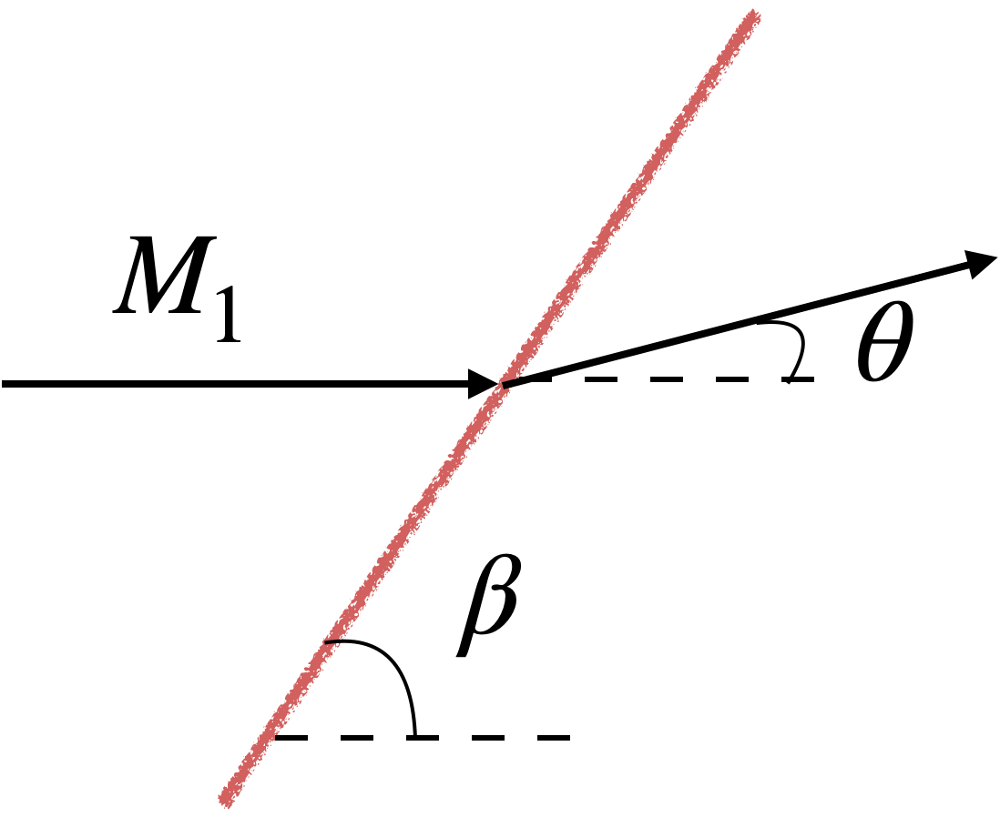

HW 3
due 9/19/2024 before midnight via Learning Suite 25 possible points
-
An aircraft or rocket, traveling at supersonic speeds, will produce oblique shock waves. The equation relating the incoming Mach number \(M_1\), to the shock wave angle \(\beta\), and the turning angle \(\theta\) is shown in the figure and equation below (you don’t really need to know any of these details, just giving some context). Typically, we know the incoming Mach number (the speed of the aircraft), and the turning angle \(\theta\) (from the shape of the vehicle), and want to solve for the shock angle \(\beta\). The equation below cannot be solved explicitly for \(\beta\). It is an implicit equation in \(\beta\) and so we need to use a root-solver.

\[\tan\theta = \frac{2}{\tan\beta}\left(\frac{ {M_1}^2\sin^2(\beta) - 1}{ {M_1}^2[1.4 + \cos(2\beta)] + 2}\right)\]From the flow physics we know the minimum and maximum angles:
\[\beta_{min} = \sin^{-1}\left(\frac{1}{M_1}\right)\\ \beta_{max} \approx 64^\circ\]Use
scipy.root_scalarto solve this problem. Try both bisection and Newton’s method and compare the number of function calls. -
Write your own version of Newton’s method and apply it to the previous problem. Compare your algorithm’s performnace.
-
Maybe a elliptic lift - drag integration problem. Gaussian quadrature and compare to trapz.
-
A hurricane has a swirling velocity, kind of like a flushing toilet. The follow table lists the tangential velocity \(V_\theta\) as a function of radius from the center of the hurricane. From fluid mechanics we learn that we can (with some assumptions) relate the pressure to velocity as:
\[\bar{p}(r) = 1 - \frac{\rho}{p_\infty}\int_r^R \frac{V^2}{r} dr\]where \(k =\) (\(k\) is just a a couple constants I bundled together for simplicity), and \(\bar{p}\) is a normalized pressure (i.e., \(\bar{p} = 1\) means we’re at the pressure of the surrounding atmosphere). Use
np.trapzto numerically integrate and determine the pressure as a function of radius. Plot the resulting pressure distribution. At the larger radii the pressure should approach 1 (meaning atmospheric pressure). -
In the goat grazing problem a farmer has a circular pen, and at the bottom of the pen a goat is tethered to a post as shown on the left side of the figure below. The farmer wishes to figure out how long the rope should be (\(r\)) so that the goat has access to exactly half of the grass in the pen. We normalize the radii so that the pen has a radius of 1 (and thus \(r\) is actually the goat’s radius relative to the pen’s radius).

First we need to figure out how much area is contained in the gray region. Using a little algebra, which I’ll skip for brevity, allows us to find the equation of the curve above the gray area and an equation below. We also find the \(x\) location of the intersections. Given a value for \(r\) we can now numerically integrate to determine the area of the gray region.
Start with a fixed value of \(r\), say \(r = 1\) just to make sure your integral is working. But to fully solve the problem we need to determine \(r\) such that the area of the gray region is half of the upper circle (which has a radius of 1). We can’t explicitly solve for \(r\), and must add a root finder around the integral function to determine \(r\).